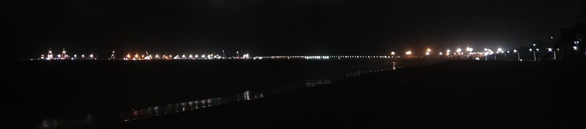
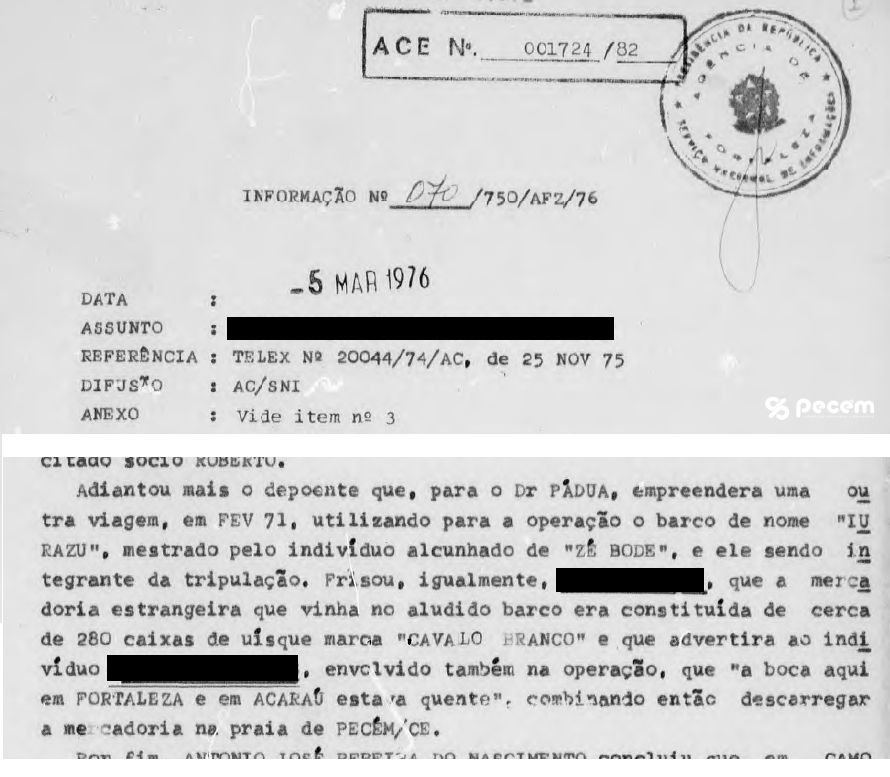

Há muitos anos, muito antes de se falar na construção do porto, uma personalidade da Taíba, famosa por seus sonhos e visões, disseminou que tinha uma visões que mostrava uma grande corrente de ouro, muito dourada, na praia entrando no mar. Hoje os moradores mais antigos da Taíba lembram desta história e descobriram a citada "corrente de ouro encantada". Quem olha da Taíba ou mesmo da Colônia para o Pecém à noite, vê aquela linha dourada causada pela iluminação da ponte entrando no mar. Esta seria a grande corrente de ouro dourada que a pessoa falava nas suas visões. Uma história fantástica e que se formos ver, vai além da questão visual pois o porto trouxe a riqueza para a região.


Quando da missa alusiva à primeira operação comercial, realizada na capela embaixo da ponte, chegou para a sra. Helenita da Associação Pecém Eu Te amo, o desafio de conseguir uma imagem de São Gonçalo. Esta buscou por toda a região, conversando com vários conhecidos porém sem conseguir. Recebeu uma dica de que teria em uma casa de umbanda em Fortaleza, que se ela não se importasse indicaria o endereço. Logo ao receber a informação onde tinha, já foi do Pecém a Fortaleza seguindo a dica. Ao chegar ao local o atendente disse que tinha acabado mas que conseguiria para o dia seguinte. Dona Helenita já deixou pago e no dia seguinte pediu para o seu filho ir pegar. Este atendeu o pedido da mãe e foi buscar a encomenda da imagem. Chegou com o pacote e a d. Helenita ao abrir teve a decepção de que não era São Gonçalo e mandou o filho levar a imagem embora. Ficou então chateada e sem saber o que fazer já que a missa seria no dia seguinte. Eis que surge uma amiga que lhe falou ter a imagem e que iria dar para ela; para surpresa não 1 imagem mas 2 imagens. Uma foi para celebração da missa e depois ficou depositada na capela da praia a outra ficou na casa da d. Helenita. A imagem usada na missa no ano de 2001 ficou na capela da praia e terminou por sumir não se sabendo o paradeiro até os dias atuais. Em 2019 a Administração do Porto restaurou a capelinha e a d. Helenita ao saber, doou a imagem que ganhou em 2001, quando da missa, estando hoje referida imagem na capela.
Quando da missa alusiva à primeira operação comercial, realizada na capela embaixo da ponte, chegou para a sra. Helenita da Associação Pecém Eu Te amo, o desafio de conseguir uma imagem de São Gonçalo. Esta buscou por toda a região, conversando com vários conhecidos porém sem conseguir. Recebeu uma dica de que teria em uma casa de umbanda em Fortaleza, que se ela não se importasse indicaria o endereço. Logo ao receber a informação onde tinha, já foi do Pecém a Fortaleza seguindo a dica. Ao chegar ao local o atendente disse que tinha acabado mas que conseguiria para o dia seguinte. Dona Helenita já deixou pago e no dia seguinte pediu para o seu filho ir pegar. Este atendeu o pedido da mãe e foi buscar a encomenda da imagem. Chegou com o pacote e a d. Helenita ao abrir teve a decepção de que não era São Gonçalo e mandou o filho levar a imagem embora. Ficou então chateada e sem saber o que fazer já que a missa seria no dia seguinte. Eis que surge uma amiga que lhe falou ter a imagem e que iria dar para ela; para surpresa não 1 imagem mas 2 imagens. Uma foi para celebração da missa e depois ficou depositada na capela da praia a outra ficou na casa da d. Helenita. A imagem usada na missa no ano de 2001 ficou na capela da praia e terminou por sumir não se sabendo o paradeiro até os dias atuais. Em 2019 a Administração do Porto restaurou a capelinha e a d. Helenita ao saber, doou a imagem que ganhou em 2001, quando da missa, estando hoje referida imagem na capela.

"Dos mais antigos moradores, poucos recordam da história de um pequeno navio que relatam, vinha fugindo da fiscalização devido a carga com contrabando de garrafas de uísque, que nesta fuga terminou por “jogar” o navio na praia para descarregar sem ser preso, de onde parte da população veio a pegar várias garrafas e, como não conseguiriam levar tudo o que pegaram que alguns enterraram várias garrafas pelas dunas, se dizendo que ainda hoje “deve ter alguma garrafa enterrada esquecida por aí”. O uísque era da marca Cavalo Branco e nas bodegas era comum de se achar, ocasião em que chamavam de “cachaça do rei”. Relatam ainda que o navio foi aos poucos também sendo saqueado e desmontado, tendo seus restos sido consumidos pela ferrugem. A história se confirma com a prescrição do sigilo dos arquivos da ABIN, que tornou público o processo de investigação que dá suporte ao fato. Em 1976 referido relatório cita fato ocorrido em fevereiro de 1971, de carga irregular de uísque que foi descarregada no Pecém." — Fonte: Thalia Brasileira.